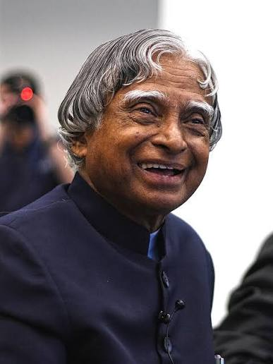

The Missile Man of India

Scientist, teacher, author and the 11th President of India.
Dr. Avul Pakir Jainulabdeen Abdul Kalam was born on 15 October 1931 in Rameswaram, Tamil Nadu. He developed a strong interest in science and technology and later studied aeronautical engineering at the Madras Institute of Technology.
Kalam made important contributions to India's space and defence programmes. He worked with ISRO and played an important role in the development of India's Satellite Launch Vehicle programme. He later worked with DRDO on India's guided missile programme.
In 2002, Dr. Kalam became the 11th President of India. During his presidency, he became especially popular among students and young people because of his passion for education, science and the development of India.
Dr. Kalam was also a respected author and teacher. His books, including Wings of Fire, India 2020 and Ignited Minds, continue to inspire readers. He received several honours, including the Bharat Ratna, India's highest civilian award, in 1997.
Born on 15 October in Rameswaram, Tamil Nadu.
Started his career in aerospace and became involved in India's space programme.
Played an important role in the successful SLV-III mission that placed the Rohini satellite into orbit.
Received the Bharat Ratna, India's highest civilian honour.
Became the 11th President of India.
Passed away on 27 July while delivering a lecture to students.
"Dream, dream, dream. Dreams transform into thoughts and thoughts result in action."
— Dr. A.P.J. Abdul Kalam